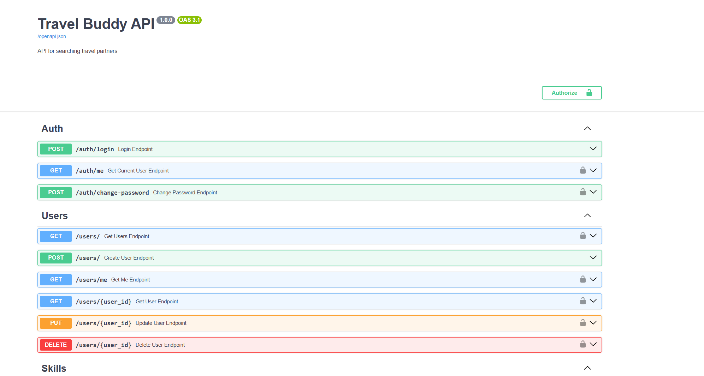
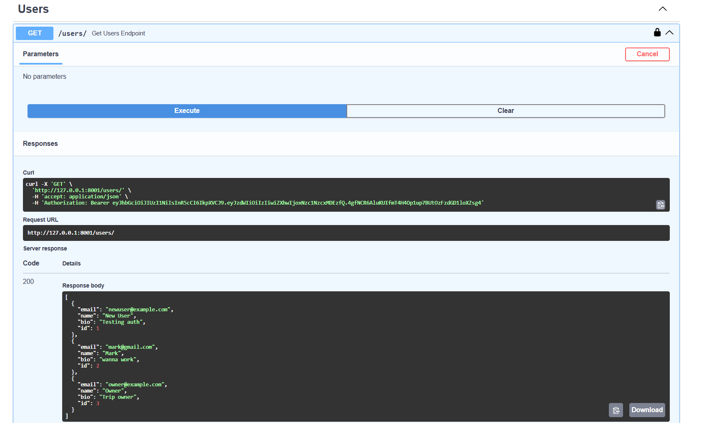
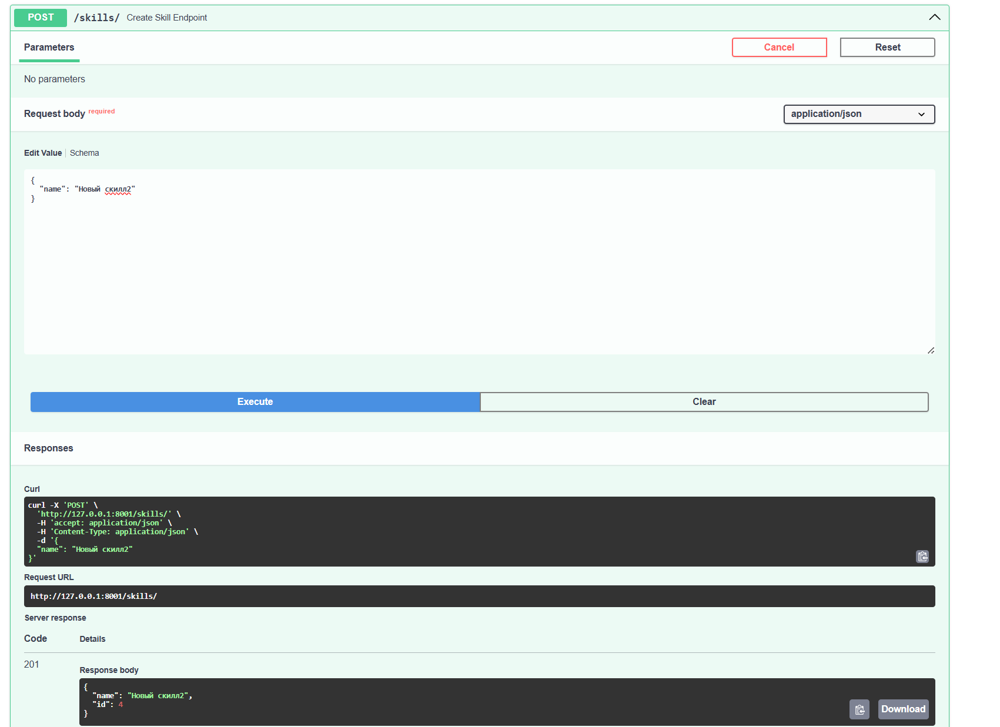
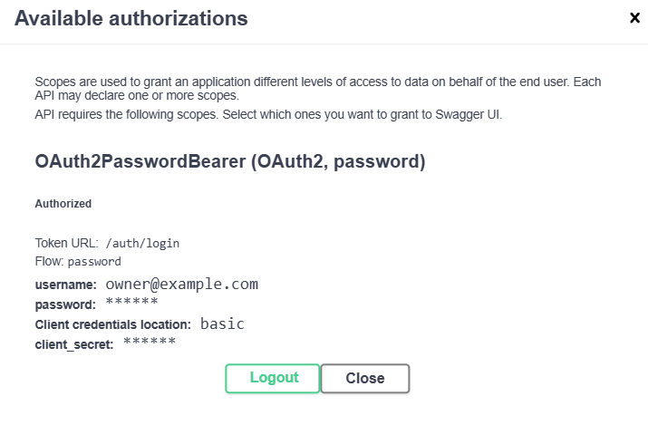
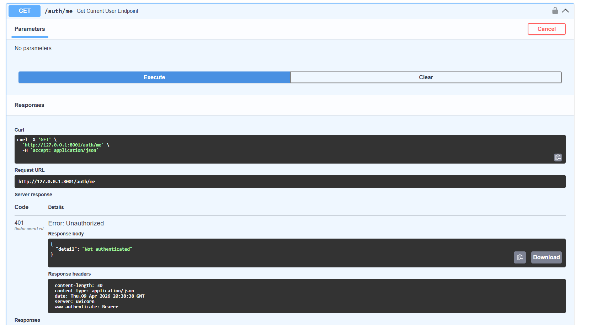
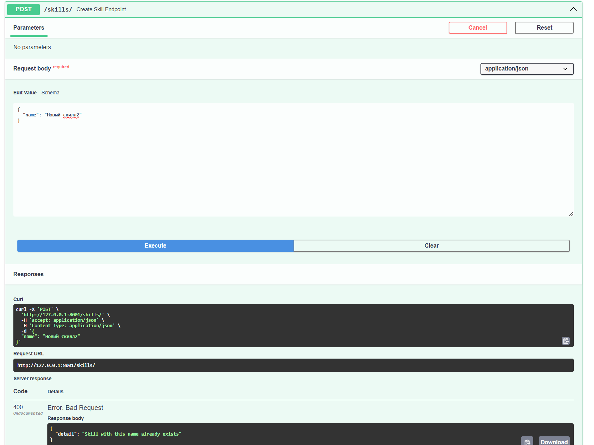

Лабораторная работа №1. FastAPI, PostgreSQL и SQLAlchemy
Цель работы
Разработать REST API сервис для поиска попутчиков и организации поездок с использованием FastAPI, PostgreSQL и SQLAlchemy.
Travel Buddy API
Веб-сервис для поиска попутчиков и организации поездок.
Проект реализован с использованием FastAPI, PostgreSQL и SQLAlchemy.
Основные возможности: - регистрация и авторизация пользователей - создание поездок - добавление маршрутов - управление участниками поездок - поиск поездок
Главная страница API

Описание системы
Разработан REST API сервис для организации поездок и поиска попутчиков.
Система позволяет пользователям взаимодействовать друг с другом через создание и управление поездками, а также обмен информацией о маршрутах и участниках.
Основные возможности
Пользователь может:
- зарегистрироваться и авторизоваться в системе
- создавать поездки с описанием и целью
- получать список всех поездок или конкретную поездку по id
- редактировать и удалять свои поездки
- добавлять маршруты (destinations) к поездке
- просматривать маршруты всех поездок
- подавать заявки на участие в поездке
- просматривать участников поездки
- управлять статусом участников
Работа с данными
Система предоставляет полный доступ к данным через API:
- можно получать информацию обо всех сущностях (пользователи, поездки, маршруты, участники)
- можно получать отдельные объекты по их идентификатору
- можно добавлять новые данные в систему
- можно изменять существующие данные
- можно удалять данные
Таким образом, реализован полный набор CRUD-операций для всех ключевых сущностей.
Авторизация и безопасность
Доступ к защищённым эндпоинтам осуществляется с использованием JWT-токенов.
После успешной авторизации пользователь получает токен, который передаётся в заголовке:
Authorization: Bearer <token>
Сервер определяет пользователя на основе токена и применяет ограничения доступа:
- только автор может изменять или удалять свою поездку
- доступ к защищённым действиям возможен только при наличии валидного токена
Архитектура
Сервис построен по клиент-серверной архитектуре:
- Backend: FastAPI
- База данных: PostgreSQL
- ORM: SQLAlchemy
- Миграции: Alembic
API реализован в стиле REST и обеспечивает обмен данными в формате JSON.
База данных
Используется PostgreSQL и ORM SQLAlchemy.
Основные сущности:
User
- id
- name
- bio
- hashed_password
Trip
- id
- title
- description
- owner_id
Destination
- id
- city
- country
- trip_id
Skill
- id
- name
TripParticipant
- id
- user_id
- trip_id
- status
- message
База данных
Используется PostgreSQL + SQLAlchemy ORM.
Модель User
class User(Base):
__tablename__ = "users"
id = Column(Integer, primary_key=True, index=True)
email = Column(String, unique=True, nullable=False)
name = Column(String)
bio = Column(String)
hashed_password = Column(String, nullable=False)
Модель Trip
class Trip(Base):
__tablename__ = "trips"
id = Column(Integer, primary_key=True, index=True)
title = Column(String, nullable=False)
description = Column(String)
owner_id = Column(Integer, ForeignKey("users.id"))
Ассоциативная таблица
class TripParticipant(Base):
__tablename__ = "trip_participants"
id = Column(Integer, primary_key=True)
user_id = Column(Integer, ForeignKey("users.id"))
trip_id = Column(Integer, ForeignKey("trips.id"))
status = Column(String)
message = Column(String)
Связи
- User → Trip (one-to-many)
- Trip → Destination (one-to-many)
- User ↔ Trip (many-to-many через TripParticipant)
API
Создание пользователя
POST /users/
Пример запроса:
{
"email": "user@example.com",
"name": "Alex",
"bio": "Traveler",
"password": "12345678"
}
Пример ответа:
{
"id": 1,
"email": "user@example.com",
"name": "Alex"
}
Демонстрация работы GET запроса

Создание поездки
POST /trips/
{
"title": "Trip to Georgia",
"description": "Looking for people"
}
Демонстрация работы POST запроса

Поиск
GET /trips/search?country=Georgia
Эндпоинты
Users
- POST /users/
- GET /users/
- GET /users/{id}
- PUT /users/{id}
- DELETE /users/{id}
Trips
- POST /trips/
- GET /trips/
- GET /trips/{id}
- PUT /trips/{id}
- DELETE /trips/{id}
Destinations
- POST /destinations/trip/{trip_id}
- GET /destinations/
Participants
- POST /trip-participants/trip/{trip_id}
Авторизация
Используется JWT.
Логика
- пользователь вводит email и пароль
- сервер проверяет данные
- возвращает токен
- токен используется в заголовке Authorization
Код логина
@router.post("/login")
def login_endpoint(form_data: OAuth2PasswordRequestForm = Depends()):
user = get_user_by_email(db, form_data.username)
if not verify_password(form_data.password, user.hashed_password):
raise HTTPException(status_code=401)
token = create_access_token({"sub": str(user.id)})
return {"access_token": token}
Использование токена
Authorization заголовок:
Authorization: Bearer <token>
Получение текущего пользователя
def get_current_user(token: str = Depends(oauth2_scheme)):
payload = decode_access_token(token)
Пример авторизации

Если пользователь не авторизован - получаем ошибку

Тестирование
Тестирование выполнялось через Swagger UI.
Проверены сценарии:
- создание пользователей
- авторизация
- создание поездки
- добавление маршрутов
- добавление участников
- поиск поездок
Также проверены ошибки:
- 400 (дубликаты)
- 401 (без авторизации)
- 403 (нет прав)
- 404 (не найдено)
Пример ошибки при POST запросе

Заключение
В рамках работы был разработан REST API сервис для поиска попутчиков.
Были изучены: - FastAPI - работа с PostgreSQL - ORM SQLAlchemy - Alembic миграции - JWT авторизация
Реализована система с контролем доступа и связями между сущностями.